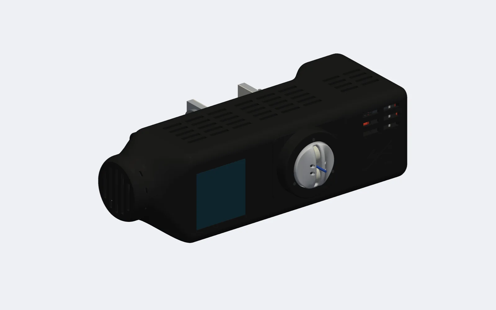
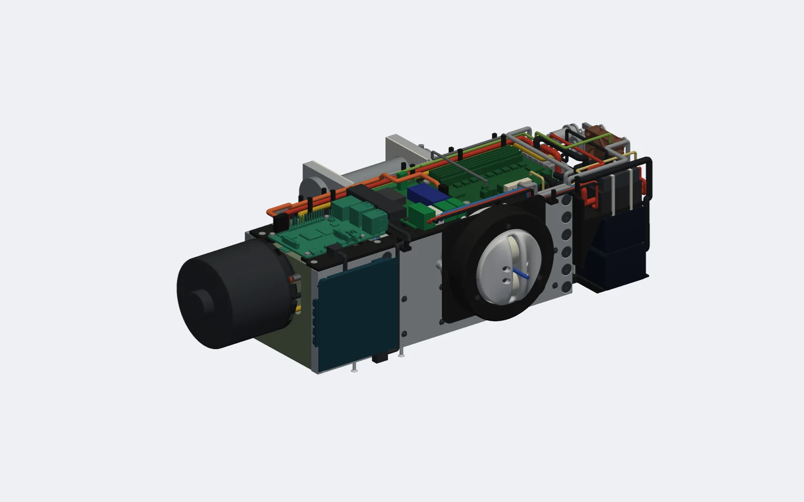

CAD & build files
V1's STEP models, plate profiles, print files and editable CAD, released together.
Release plan ↓The open-source smart gym · in development · CAD, not built yet
Formerly Kinetiq Gym. Same project, new name.
V1 is the current design: a direct-drive motor, a 1 in rope drum and a swivelling rope exit in a box of five aluminum plates, on a battery, hung on a rack upright, with 180 lb of resistance as its design target. Four more builds follow it with a few parts swapped: a larger motor, wall power, a budget build and a wall mount. V1's priced parts come to about $1,600 so far (a few lines with the price to come). Compare the builds, read each parts list, and see what gets released once a prototype is tested.
Nothing here is built in metal or load-tested. Every number is a design estimate. V1's CAD, build files and software are released together after a physical prototype is built and load-tested.

Build it. One design, five builds.
Understand it. See inside the mechanism.
Adapt it. Your motor. Your power.
Where the project stands
V1 is complete in CAD and still under review. A 3D-printed prototype of the earlier design, V0, is on the bench for fit and first low-force tests. V1 in aluminum follows, and V1's files are released once a prototype has been tested. V0's design files will be available once a verification pass is done. Building V0 is not recommended: V1 is the version to wait for.
V1's STEP models, plate profiles, print files and editable CAD, released together.
Release plan ↓Touchscreen app, Pi setup, Teensy control firmware and the phone app.
The app concept ↓V1's build sequence from the CAD, to be confirmed step by step on the prototype.
Read the build order ↓The lineup
V1 is the design. Each of the other four is V1 with a few parts swapped, so a fix to V1 reaches all of them. They are shape-and-fit first looks: only V1 has been calculated, at its own load. Every resistance here is a design target, not a result or a rating. Nothing is built in metal or load-tested.
| Build | Resistancedesign target, not built or tested | Power | Mount | Price so farpriced parts only |
|---|
V1 at 180 lb is built first. The 220 lb battery build is planned to become the main build after it; today it is a first look, not the current design.
Every picture here is a quick preview from the CAD, at the same camera and scale for every build; final renders come later. V1 wall mount (300) is drawn as it hangs, with the wall behind it: on the wall its rope exit and screen face up. Prices are planning figures read on the dates shown in each parts list, not quotes. “Priced so far” leaves out the lines whose price is still to come.
A closer look
Pick a build, then a view. Covers off shows the motor at one end, the drum and its geared rope guide in the middle and the electronics at the other end. The exit swivels on two bearings so the rope can leave in any direction, and the rope is drawn to touch only metal on its way out.

How it goes together
V1's frame is a box of five 3/8 in 6061 plates, screwed together through their edges: nothing is welded and nothing is turned on a lathe. The drum, the rope guide and the exit are built on the bench and go in before the box is closed; the electronics sit on a printed deck on top; the covers slide on last. The order below comes from the CAD and is a draft until a prototype confirms it.
See how it comes together
Follow the rope, the drivetrain and the build, then the phone app concept. The film was made on the earlier design: V1 keeps the same mechanism (direct drive, a geared rope guide, a swivelling exit) in a new frame. Design previews: physical validation is still ahead.
Product + build + app concept · the earlier design and name · about a minute · Download film
Plan before you order
Pick a build to see its parts list. Each price shows where it stands: read at the seller, recorded in the project's buying notes, an estimate, or still to come. Edit any price to use your own; your changes stay in this browser. These are planning figures for a design that is not built yet: do not order from this list.
Resistance · design target, not built or tested
Loading…Priced lines so far, USD
The main list: what a builder has to buy, with small bulk parts at the price of the pieces used. Lines marked “to come” have no price on record yet and are not in the total; enter your own price to add one. Not in the total: the accessory list below (tools, wire, filament, screw assortments), tax, delivery, labor and the rack. Estimates are not supplier quotes.
| # | Part / purchase unit | Qty | Unit price | Subtotal |
|---|
“Source price” is a price read at the linked supplier on the date shown. “Recorded price” is from the project’s buying notes and was not re-read. “Estimate” is a planning figure. “Price to come” has no price on record yet.
Things many builders already have: tools, wire and terminals, filament, screw assortments, inserts and setup items. Buy only what is missing. Not in the total above.
| Item | Qty | Unit price | Subtotal |
|---|
One recorded price for having the five box plates laser cut, as an example. Prices depend on the shop, the quantity and the lead time, so get your own quote. Not in the total above. Ready-made metal kits are planned after testing: join the kit waitlist.
| Item | Qty | Recorded price |
|---|
The same lists as one page, with V1's screw table ↗ · Parts CSV
Make the parts
Nothing here is a download yet. V1's CAD and every build file are released together, with the confirmed parts list and build instructions, once a prototype has been built and load-tested.
After testing V1's files are held back until the design is proven on real hardware, so nobody builds from an untested revision.
V0 V0 is the earlier design, 3D-printed and on the bench. Its design files will be available once a verification pass is done. Building V0 is not recommended: V1 is the version to wait for.

A metal kit of the parts most builders cannot make at home: the five box plates, the drum parts, the exit and the rack mount, made by the Joulvo maker and ready to bolt together. Printed-part sets and complete machines may follow.
Not for sale yet. Kits open only after a prototype passes load testing.
Join the kit waitlistThe print settings online are for the earlier design and will be rewritten for V1.
Make it yours
The design is built to be adapted: the lineup itself is V1 with the motor, the controller or the power swapped. The pack tray and the motor plate are the two interfaces most builders will change. The editable CAD comes with the verified release.

V1 uses two 5S packs in series (10S, 42 V fully charged). The packs take the energy back when the weight is lowered, so a pack that fits is not automatically electrically compatible.

The drive is direct: rope force ≈ motor torque ÷ the drum's rope radius. A different Kv or a larger motor does not by itself make a safe machine: every part in the load path has to be checked again at the new load.
The modification reference online is for the earlier design and will be rewritten for V1.
Your gym. Your interface.
The phone interface from the film. The app and programs are released after testing; these screens show the intended experience, with the earlier name on them.
Adjust the load, choose a resistance profile and configure return resistance from your phone.
The built-in screen keeps resistance, the rep graph and essential controls close. The Bluetooth companion is planned for deeper settings and training history.

Resistance, rep graph, modes and essential controls.
Raspberry Pi program & setupMachine control, position limits and motor-driver communication.
Teensy program & configurationBluetooth settings, workouts, profiles and training data.
App & connection setupThe ODrive is a third-party controller with its own firmware and terms, separate from the project’s application code.
Help turn the design into tested hardware
The CNC machine is already in the workshop. Support now goes into building, testing and improving the prototype, and into making the machine easier for others to build.
Parts, aluminum stock and the revisions that come out of load testing, measurement and real training.
Clear build instructions and videos, fit coupons, test jigs, and help for the people building their own.
Project support is a voluntary contribution, not a product order or a kit pre-sale. Progress and test results are shared as the build continues.
Open hardware, once it is proven
Joulvo Gym is released as open hardware once the design is verified on a physical prototype. Anyone will be able to build it, change it and share their changes under the licences below.
For now the public repository holds this website, the documentation and the pictures. Contributions open with the verified release: there is no tested design to contribute to yet.
For the verified release:
Hardware: CERN-OHL-S-2.0 (V0's design files too)
Documentation: CC BY-SA 4.0
Software: GPL-3.0
The Joulvo and Joulvo Gym names and logo, and the earlier KINETIQ and Kinetiq Gym ones, are not licensed: only the project's maker sells kits and machines under them.